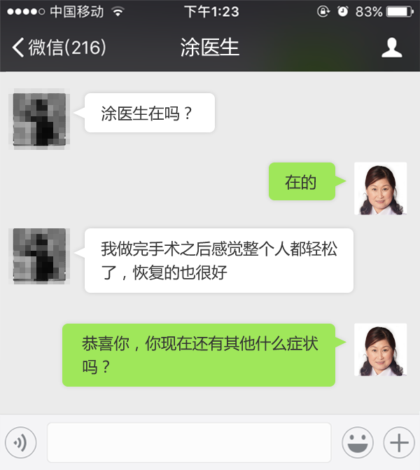
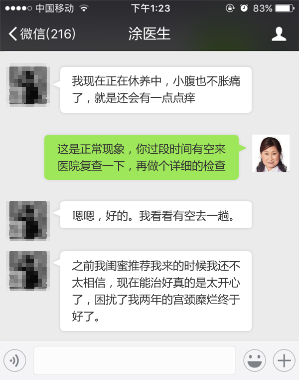
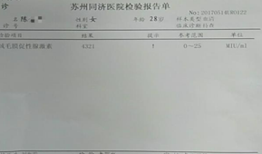
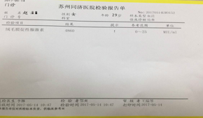

宫颈糜烂是妇女最常见的一种妇科疾病。多由急、慢性宫颈炎转变而来，在已婚、体虚或流产后女性中最为常见。以往宫颈糜烂只是在已婚的女性中较为多发，可是随着生活节奏的加快，人们思想观念的开放、宫颈糜烂也越来越青睐年轻女性，宫颈糜烂的发病率已经高达60%-80%，号称女性健康的“一大杀手”。
宫颈糜烂是妇女最常见的一种妇科疾病。多由急、慢性宫颈炎转变而来，在已婚、体虚或流产后女性中最为常见。以往宫颈糜烂只是在已婚的女性中较为多发，可是随着生活节奏的加快，人们思想观念的开放、宫颈糜烂也越来越青睐年轻女性，宫颈糜烂的发病率已经高达60%-80%，号称女性健康的“一大杀手”。
>> 案例回放 <<
治疗宫颈糜烂 恢复甜蜜婚姻生活
这两年来，我因为患有宫颈糜烂，在过性生活时痛得厉害，还有出血情况，导致做爱时我不能全情投入。每次同房后老公都草草了事，慢慢的做的次数越来越少，老公也开始早出晚归，一天到晚不着家，我知道他是不想看见我。直到有一天我在老公的手机上看到了他和同事的合照，照片中老公和一个女孩子靠的很近，手揽着她的腰，身子几乎要贴一起去了，我一看就知道出事了。那个女孩子并没有多漂亮，但是一看就感觉很干净、清爽，我意识到了深深的危机感。
我的检查报告
我要拯救我的婚姻。于是，闺蜜介绍我到苏州同济医院过来治疗。但我还是抱着试试看的态度请了半天假去苏州同济医院。接待我的是刘海霞医生，刘医生说我的病情已经算是重度宫颈糜烂了，我担心害怕极了。刘医生又听了我以前致病的过程，跟我解释说之所以我的病情一直反反复复是因为我用药清洗。我的情况是要做手术的，最终我听从了刘医生的建议选择了BBT消融术治疗。
治疗后的宫颈对比
苏州同济医院已经运用此技术成功为数千名宫颈糜烂患者解除了病痛折磨；愈后也不会留下疤痕，对生育也没有任何影响。
 现在的我，早已经康复，不仅白带清清亮亮的，而且腰不酸了，小腹也不胀痛了，最高兴的是，在跟老公亲热时，也再没有发生疼痛和出血的情况了。我的婚姻生活比以前更甜蜜了，现在老公对我好的不得了，有应酬也是早早的回家，现在每一天都过得很幸福。
医生讲解：宫颈糜烂的危害
The doctor explained: the harm of cervical erosion
1、引起并发症
2、导致不孕
3、引起宫颈癌
4、诱发流产
医生简介
Doctor profile
精彩评论区
化蝶赞（23）
2017-5-19 13:47
一直有宫颈糜烂，白带多而且有异味；在公司例行体检的时候查出来已经发展为中度糜烂，吓的我赶紧做了手术，现在已经彻底好了，身上没有味道比以前更自信了。
羊驼爱吃草赞（12）
2017-5-19 15:00
有些人以为没结婚的女性就不得宫颈糜烂，这种想法不对的，我和我男朋友相爱的早，前段时间性生活出血去医院发现是宫颈糜烂，做了BBT射频消融术之后同房比以前更和谐了。
桑葚赞（44）
2017-5-19 15:20
28岁，结婚两年来一直备孕无果，去医院经刘海霞主任诊断发现重度宫颈糜烂、卵巢囊肿、盆腔粘连等多种问题，然后我才知道自己一直怀不上孩子的原因，幸亏来苏州同济医院治好了我的宫颈糜烂和其他妇科病，现在我的孩子已经5个月大了。这是我当初的而检查报告。
上天堂的猪赞（5）
2017-5-19 16:30
我是提前在网上预约的涂医生，是朋友介绍过来看的，听她说看的不错，一直没有复发。我不止白带不正常，我还腰疼，大腿抽筋，不知道你们有没有这种情况。做了BBT射频消融术没有感到难受，恢复之后身体比以前好很多。我的检查报告。
浪俏的花爷赞（55）
2017-5-19 17:08
怀孕初期被查出宫颈糜2度半，断奶后复查宫颈已全部糜烂，性交后分泌物中有血样，平时没有什么太大的感受，可以接受手术治疗吗？
>> 可在下面框中评论，经系统审核后可显示 <<
苏州妇科医院免费咨询、挂号服务
涂瑷琳 妇科医师
擅长：卵巢囊肿、宫颈糜烂等妇科疾病
2017-5-19 13:47
女性不注意下体的卫生，性生活不注意等，很容易形成子宫糜烂，如果宫颈糜烂3度怎么办，治疗一般两步。
第一步：阴道用药多为中药或中药与抗生素的混合制剂， 多具有清热燥湿，消肿止痛，活血生肌等作用，且无创伤 ，用药方便，适用于轻度宫颈糜烂患者。
第二步：建议做“BBT射频消融术”，这是目前最先进的 一种宫颈疾病的诊断和治疗新技术。在B超的连续动态观 察和引导下，准确定位病变部位，以射频为治疗源，运用 电磁波的热效应，使病变组织发生凝固、坏死、消融。一 次治疗就能达到治疗目的。